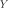
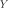
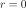

8.7. Examples¶
8.7.1. Two Particles in Harmonic Potential¶
It is a 1D, two-body problem with an interacting Hamiltonian
and it can be solved analytically. The Schrödinger equation is
we use the substitution:
then
and
Note also the symmetry of the Hamiltonian which after substitution is equivalent to . Now we can separate the equation:
the solution of the second equation is:
where are the Hermite polynomials:
The solution to the first equation can be approximated around the minimum of
the potential, which occurs at point (since the potential is symmetric
with respect to  , we only treat the branch ):
, we only treat the branch ):
So the first few states can be approximated by the harmonic oscillator solution with frequency :
The final solution is then:
8.7.2. Quantum Harmonic Oscillator¶
The quantum harmonic oscillator for one particle in 1D is:
This is a partial differential equation for the time evolution of the wave
function  , but one method to solve it is the
eigenvalues expansion:
, but one method to solve it is the
eigenvalues expansion:

where the sum goes over the whole spectrum (for continuous spectrum the sum
turns into an integral), the  coefficients are determined from the initial condition
and satisfies the one dimensional one particle time independent
Schrödinger equation:
coefficients are determined from the initial condition
and satisfies the one dimensional one particle time independent
Schrödinger equation:
and this is just an ODE and thus can be solved with Hermes1D. There can be many types of boundary conditions for this equation, depending on the physical problem, but in our case we simply have and the normalization condition .
We can set and from now on we’ll just write  instead of
:
instead of
:
and we will solve it on the interval  with the boundary condition
. The weak formulation is
with the boundary condition
. The weak formulation is
but due to the boundary condition so and we get
And the finite element formulation is then and
 :
:
which is a generalized eigenvalue problem:
with
8.7.3. Radial Schrödinger Equation¶
Another important example is the three dimensional one particle time independent Schrödinger equation for a spherically symmetric potential:

The way to solve it is to separate the equation into radial and angular parts by writing the Laplace operator in spherical coordinates as:
Substituting into the Schrödinger equation yields:
Using the fact that  we can cancel  and we get the radial
Schrödinger equation:
we can cancel  and we get the radial
Schrödinger equation:
The solution is then:
where satisfies the radial Schrödinger equation (from now on we just write ):
Again there are many types of boundary conditions, but the most common case is
and or . One solves this equation on
the interval for large enough  .
.
The procedure is similar to the previous example, only we need to remember that we always have to use covariant integration (in the previous example the covariant integration was the same as the coordinate integration), in this case , so the weak formulation is:
Integrating over the angles gives  which we cancel out at both sides and
we get:
which we cancel out at both sides and
we get:
We apply per partes to the first two terms on the left hand side:
We used the fact that . If we also prescribe the
boundary condition  , then the boundary term vanishes completely. The
weak formulation is then:
, then the boundary term vanishes completely. The
weak formulation is then:
or

Another approach¶
Another (equivalent) approach is to write a weak formulation for the 3D problem in cartesian coordinates:
and only then transform to spherical coordinates:
The 3d eigenvectors  however are not spherically symmetric.
Nevertheless we can still proceed by choosing our basis as
however are not spherically symmetric.
Nevertheless we can still proceed by choosing our basis as
and seek our solution as
Using the properties of spherical harmonics and the gradient:
the weak formulation becomes:
where both  and
and  indices are given by the indices of the particular base
function
indices are given by the indices of the particular base
function  . The term is (schematically):
. The term is (schematically):
There is an interesting identity:
But it cannot be applied, because we have one more  in the expression.
Nevertheless the term is probably zero, as can be seen when we compare the weak
formulation to the one we got directly from the radial equation.
in the expression.
Nevertheless the term is probably zero, as can be seen when we compare the weak
formulation to the one we got directly from the radial equation.
How Not To Derive The Weak Formulation¶
If we forgot that we have to integrate covariantly, this section is devoted to what happens if we integrate using the coordinate integration. We would get:
Notice the matrix on the left hand side is not symmetric. There is another way of writing the weak formulation by applying per-partes to the term:
We can use  and to simplify a bit:
and to simplify a bit:
Since near , we can see that for the limits on the right hand side are zero, but for they are not zero and need to be taken into account. Let’s assume for now, then our weak formulation looks like:
or
The left hand side is also not symmetric, however we can now take an average of our both weak formulations to get a symmetric weak formulation:
Keep in mind, that this symmetric version is only correct for . For
 we need to use our first nonsymmetric version.
we need to use our first nonsymmetric version.
As you can see, this is something very different to what we got in the previous section. First there were lots of technical difficulties and second the final result is wrong, since it doesn’t correspond to the 3D Schrödinger equation.
Scattering in radial potential¶
If  , the radial equation is:
, the radial equation is:
The general solution is a linear combination of the spherical Bessel functions and :
where and is a continuous spectrum. The asymptotic expansion for  is:
is:
so we get for large :
where
(8.7.3.1)¶
The and  are physical variables, so we express
are physical variables, so we express  and
using them:
and
using them:
(8.7.3.2)¶
and write the exact solution as:
(8.7.3.3)¶
We can then compare this to , by expanding :
Since and integrating over  we get the
total cross section:
we get the
total cross section:
In order to find the phase shifts , we solve the radial equation for
the full potential
and then fit it to the above asymptotic solution for V=0. We require that the
value and the slope must be continuous, so we use (8.7.3.3) and  must
satisfy the following two equations (for the value and the derivative)
at the point :
must
satisfy the following two equations (for the value and the derivative)
at the point :
(8.7.3.4)¶
This is a set of two equations for two unknowns and .
The solution is:
(8.7.3.5)¶
And one can calculate and from (8.7.3.1).
Code:
>>> from sympy import var, solve
>>> var("R Rp j jp n np A B k")
(R, Rp, j, jp, n, np, A, B, k)
>>> eq1 = R - A*j - B*n
>>> eq2 = Rp - k*A*jp - k*B*np
>>> solve([eq1, eq2], [A, B])
{A: (R*k*np - Rp*n)/(k*(j*np - jp*n)), B: (-R*jp*k + Rp*j)/(k*(j*np - jp*n))}
Another approach to calculate is to
take the logarithmic
derivative () at the point :
(8.7.3.6)¶
and solving for we get:
(8.7.3.7)¶
where we used the following relations:
The disadvantage of (8.7.3.7) is that we only know , while in
(8.7.3.5) we know directly using the function.
Now we can use these in the formula for the total cross section. We
can define a reduced phase-shift by
where is the number of radial nodes and .
The problem can now be formulated in two ways. Either to solve the radial equation for a potential with finite reach and then “measure” those phase shifts in the solution. Or by prescribing those phase shifts and we now need to calculate the solutions (e.g. the energies) from the radial equation.